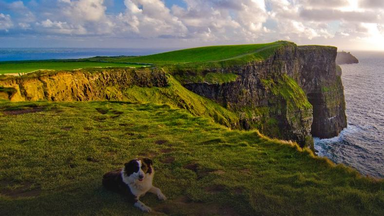

Witaj o to strona o podróżach

Podróże są nieodłączną częścią życia, czy mniejsze czy większe to bez znaczenia.
Ważniejsze jest to jakie doświadczenia zbierzemy i jak zmieni się nasze postrzeganie świata.
JAPONIA

Pachnąca kwitnącą wiśnią, uduchowiona, przywiązana do tradycji, a jednocześnie hipernowoczesna. Japonia to nie tylko tajemnicze gejsze, kolorowe origiami i orientalne przysmaki.
Popularne kierunki
- Tokyo
- Kioto
- Nara
- Takayama
IRLANDIA
Bajeczna kraina zielonej trójlistnej koniczyny, gdzie leprikony najbardziej znane irlandzkie skrzaty, skrywają garnki ze złotem na końcu tęczy, a mrok skrywa legendarnego olbrzyma Cuchlainna z powieści Williama Butlera Yeatsa.
Popularne kierunki
- Leinster
- Munster
- Connacht
- Ulster
USA
Stany Zjednoczone to światowe mocarstwo, trzeci pod względem wielkości i liczby ludności kraj na świecie to fascynująca podróż dla każdego bez wyjątku.
Popularne kierunki
- Nowy Jork
- Seattle
- Abilene
- Akron